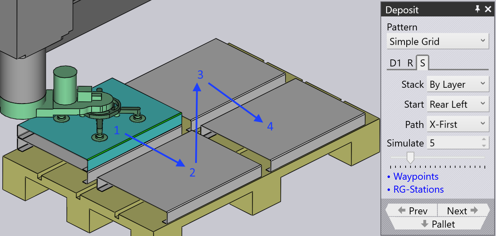

Répétition et séquence
Grille de répétition
Les onglets D1 et D2 indiqués ci-dessus sont utilisés pour spécifier l’orientation de la première pièce du dépôt. Ensuite, les paramètres de l’onglet Répétition sont utilisés pour la répliquer dans une grille de rangées (Z), colonnes (X) et couches (R). L’image ci-contre montre un dépôt avec plusieurs de ces paramètres modifiés par rapport aux valeurs par défaut.

-
Les paramètres de Grille sont utilisés pour configurer le nombre de colonnes et de rangées dans le dépôt.
-
Le paramètre Couches spécifie combien de pièces sont empilées les unes sur les autres dans chaque pile.
-
Les paramètres Gap (Z, X) sont utilisés pour spécifier l’écart entre les colonnes successives ou les rangées successives. Si vous définissez cette valeur sur 0, les rangées ou colonnes se touchent exactement.
-
Les paramètres Stack shift sont utilisés pour déplacer la pile complète de toutes les pièces depuis le centre de la palette.
Séquence de dépôt

L’onglet Séquence est utilisé pour contrôler la séquence dans laquelle les pièces sont déposées. Les paramètres de cet onglet de séquence sont affichés ci-contre. Dans cet exemple, il y a deux orientations de dépôt D1 et D2, et il y a correspondant deux ensembles de paramètres de séquence (cela signifie que vous pouvez démarrer les couches D1 depuis un coin, tandis que les couches D2 peuvent démarrer depuis un coin différent).
-
Le paramètre Empilement a deux options : By Layer ou By Pile. Dans cet exemple ici, l’empilement Par couche construirait les deux piles adjacentes à l’unisson - cela signifie que les dépôts successifs se produiraient dans la pile 1, pile 2, pile 1, pile 2, etc. Ainsi, les deux piles s’élèveront en hauteur ensemble. Lorsque vous empilez Par pile, toutes les pièces de la pile de gauche sont déposées d’abord avant de commencer à placer des pièces sur la pile de droite.
-
Les paramètres Start coin et Chemin sont utilisés lorsqu’il y a plusieurs rangées ou colonnes, et décident de quel coin l’empilement commence, et si l’empilement se poursuit ensuite rangée par rangée, ou colonne par colonne. Cela peut être utile surtout avec un préhenseur décentré, car un coin de départ différent peut provoquer une collision entre le préhenseur et la pièce précédente qui a déjà été déposée.

-
L’image montre un exemple où nous commençons depuis le coin Arrière Droit et procédons au dépôt X en premier (les numéros 1, 2, 3, 4 montrent la séquence de dépôts dans cette couche). Si nous avons commencé ce dépôt depuis le coin inférieur Avant Gauche (par défaut), nous aurons la situation où lorsque nous déposons la deuxième pièce dans la couche, le préhenseur entrera en collision avec la pièce précédente (car il s’étend de manière décentrée hors des limites de la pièce).
-
Les paramètres Simuler (à la fois le sélecteur numérique et le curseur) peuvent être utilisés pour parcourir les dépôts pour voir l’ordre dans lequel ils se produisent sur la palette. Ceci est particulièrement utile lors de l’ajustement du coin de départ et des paramètres de chemin. Dans l’image ci-dessus, nous voyons le dépôt de la pièce 17 (sur 20). Si nous déplaçons le curseur vers la droite (ou ajustons la valeur dans la zone de saisie Simuler), vous pouvez visualiser le préhenseur en position pour les dépôts 18, 19 et 20.